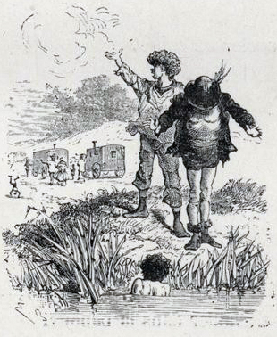

HAI giờ sau, tôi đi đến thành-phố Sức-Văn. Sợ nguời ta để ý, nên tôi không vào tỉnh mà đi vòng phía sau, thành ra đường về tỉnh Via.
Tôi đã hoàn hồn. Bây giờ tôi lo đến những nỗi khó-khăn sẽ gặp phải trên đường từ đây về Hồng-Lư. Nồi của tôi đã bị bỏ lại ở Mạc-Tân rồi. Chỗ nào tôi cũng trông thấy Cảnh-binh. Bất cứ một cái mũ nào trông thấy ở xa đều hiện hình thành cái mũ ba sừng ghê-gớm. Thành thử, đi chưa được ba dặm mà hơn mười lần tôi đã phải bỏ đường cái chạy xuống nấp trong ruộng lúa hay ẩn sau bụi cây bên kia hào. Trong khi nhẩy qua một cái hào nọ, tôi nghe thấy tiếng sủng-soảng trong túi như là tiếng xu chạm vào nhau. Tôi liền thò tay vào túi thì quả-nhiên là xu. Tôi đếm đuợc 6 xu. Và hay hơn nữa là hai đồng bạc 40 xu vẫn còn trong túi. Chiều hôm qua, tôi đi mua thuốc lá cho ông Lư-Sinh, đưa 5 phật-lăng người ta thối lại 6 xu đó. Không biết tôi có nên giữ số tiền đó không? Nhưng làm thế nào mà trả lại được? Tôi định sau này có dịp thế nào tôi cũng hoàn lại họa-sĩ.
Ngày thứ ba, sau khi đã đi qua Hạc-Cung tôi đến một khu rừng lớn gọi là rừng Sinh-Lai. Mới buổi sáng mà khí nóng đã gắt-gao và khó thở, khiến tôi không đợi được đến trưa mới nghỉ. Tôi đi sâu vào rừng để tìm chỗ mát. Nhưng dưới bóng cây râm cũng như trên đường cái, khí trời như nung như đốt. Không một tiếng lá động, không một tiếng chim kêu. Khắp rừng im-lìm, tưởng chừng như bà tiên trong chuyện “Hằng Nga ngủ ở trong rừng” đã ghé qua đây và hóa cho cảnh-vật ngủ cả, duy những giống sâu, giống ruồi là thoát ở ngoài vòng. Trong cỏ, những con sâu nhảỵ xào-xạc. Dưới tia nắng xiên chếch vào gốc cây, từng đàn sâu có cánh bay qua bay lại vù-vù. Hình như trời càng nóng, sức hoạt-động của chúng càng tăng-cường.
Tôi vào một gốc cây giẻ ngồi, đầu gục xuống cánh tay, thiu-thiu ngủ lúc nào không biết. Chợt thấy “nhốt” một cái ở cổ, tôi tỉnh dậy lấy tay sờ lên bắt được một con kiến nâu. Đồng-thời, tôi lại thấy đốt chói ở đùi, ở ngực, ở bụng, ở lung-tung khắp cả người. Tôi vội-vàng cởi quần-áo rũ ra, rơi xuống đất có hàng một đàn kiến. Rũ sạch kiến chưa phải là hết tội, vì kiến cũng như muỗi khi đốt xong vẫn để lại nọc độc ở vết thương. Tôi nhức-nhối khó chịu, càng gãi càng thấy đau. Một giờ sau móng tay tôi đều rướm máu.
Tôi tiếp tục đi cho quên đau, nhưng đường cứ dài ra, dài mãi, hai bên cứ thấy cây là cây mà cái nóng cứ mỗi lúc một gắt. Sau cùng lên một cái dốc, tôi trông thấy phía trước mặt có một dòng nước lượn trong đám cây to. Trong muời phút, tôi tới bờ và trong vài giây tôi đã cởi xong quần-áo và nhảy xuống nước.
Nước sông mát làm sao! Tôi sẽ dầm mình mãi ở đây nếu thình-lình trên bờ chỗ tôi để quần-áo không có tiếng người đưa xuống:
– A! Đồ mất dạy! Tao lại bắt được mày tắm ở đây. Lần này đến trụ-sở xã mà lấy quần-áo!
Quần-áo tôi! Quần-áo tôi đem về xã! Nghĩa là quần-áo tôi một nơi, tôi một nẻo à? Tôi không tin cái tai của tôi…
Tôi nhìn xem ai nói. Đó là một người đàn ông béo, thấp, vận áo len xám, ngực đeo một tấm huy-hiệu lóng lánh sắc vàng, đang đứng trên bờ và chỉ vào tôi.
Người đó không để mất thì-giờ, dọa xong làm ngay.
Ông ta cúi xuống, vơ đống quần-áo của tôi.
Tôi kêu:
– Ông ơi! ông!
– Về trụ-sở..
Tôi định lội lên, chạy theo xin ông ta nhưng phần sợ cái huy-hiệu vàng chói của ông phần nghĩ đến thân hình trần-trụi của mình nên đành đứng lặng.
Cuộn xong, ông ta kẹp búi quần-áo vào nách và quay lại bảo tôi:
– Mày về trụ-sở mà kêu.
Rồi ông ta quay lưng đi.
Tôi ngượng-ngùng lên bãi và nấp trong đám lau sậy. Lá cây xanh và dài rủ xuống che kín chỗ tôi, người ngoài khó lòng nhìn thấy.

.Tình-trạng của tôi nguy-khốn quá. Làm thế nào mà đến trụ-sở bây giờ? Mà trụ-sở xã ở đâu? Cứ lõa-thân như thế mà đi rong đường và diễu các phố hay sao?
Đây là lúc phải bắt chước Lỗ-Bình-Sơn. Nhưng trong thực-tế, người ta xoay-xở rất khó chứ có đâu được nhanh chóng như trong sách.
Thế là hết đường. Tôi rũ ra như người sắp chết và nức-nở khóc. Rồi tự-nhiên, tôi thấy lạnh cả người và run lên cầm-cập.
Thì-giờ cứ đi mà tôi không nghĩ được cách gì cứu-vãn tình-thế. Mặt trời sắp lặn. Đêm sắp xuống. Không phải là một đêm ngủ ngoài trời với quần-áo che thân ở chân đống cỏ khô như các đêm trước. Bây giờ trần-trụi ngồi ở trên bãi cát ẩm thấp, tôi biết làm thế nào? Dòng nước cứ chẩy xuôi trước mặt, khiến tôi nhìn lâu sinh chóng mặt. Tôi tưởng-tượng như trông thấy những con ác thú đi ăn đêm.
Còn độ một giờ nữa thì trời tối. Tôi chợt nghe thấy tiếng hai ba cái xe đi lệch-kệch trên đường cái rồi từ-từ dừng lại đúng phía sau tôi. Ở giữa bụi sậy, tôi không trông lên đường được nhưng nghe tiếng xích, tôi biết người ta đang tháo ngựa. Một tiếng gầm dữ-đội không phải là tiếng ngựa kêu bò rống, nổi lên – tôi không hiểu là tiếng gì – làm cho đàn chim đang đậu trong bụi cây bay tán-loạn và nháo-nhác gọi nhau. Một con chuột to ở đâu nhảy bổ vào chân tôi và chui tọt vào tổ vì tôi đứng chắn cửa hang.
Mấy phút sau, hình như có tiếng chân người đi trên ruộng cỏ gần chỗ tôi. Tôi không nhầm. Có tiếng nói:
– Tao có một con gà mái.
– Mày bắt ở đâu thế?
– Bằng một hòn đá buộc vào đầu roi, tao bắt nó trên đường cái cũng như bắt cá dưới nước.
– Luộc ăn chứ?
– Im mồm. Nếu thằng Bôn biết, nó phỗng thì chúng mình chỉ còn những xương.
Tôi vịn hai tay vào bờ, cố nhô đầu lên để nhìn vào ruộng cỏ. Nghe tiếng nói ồ-ồ tôi tưởng hai người vừa nói chuyện đó là người lớn bây giờ trông ra thì là hai đứa bé bằng trạc tuổi tôi. Tôi vững dạ, cố nghển lên cao chút nữa, đánh bạo nói:
– Các anh ơi! … Các anh….
Hai đứa quay lại ngơ-ngác nhìn, không biết tiếng nói phát tự đâu ra vì chỉ có cái đầu tôi thò lên thôi. Hai đứa kinh-ngạc, không biết nên ở hay nên chạy.
Một đứa trông thấy tôi liền kêu to:
– Kia có cái đầu!
Đứa kia nói:
– Người chết đuối đấy.
– Mày ngu lắm! Nó nói được kia mà!
Ngay lúc đó tôi nghe thấy có tiếng ở trên đường cái gọi to:
– Đồ lười! Chúng mày không cắt cỏ à?
Tôi thấy trên đường cái có ba cái xe ngựa đậu thong-dong, cái nào cũng dài, bên ngoài sơn đỏ và vàng. Đó là một phường xiếc rong.
Hai đứa trẻ đáp ;
– Anh Bôn ơi! Anh Bôn ơi!
– Cái gì?
– Một tên Mọi, xuống mà xem. Thực đấy.
Bôn xuống ruộng cỏ.
– Tên Mọi của chúng mày đâu?
– Ở trong đám lá kia kìa.
Cả ba người đều chòng chọc nhìn tôi và cười ầm lên.
Người mà hai đứa trẻ gọi là anh Bôn, hỏi chúng:
– Nó nói tiếng gì?
– Tiếng Pháp.
Tôi trả lời chen vào thay hai đứa bé. Xong tôi kể chuyện của tôi, họ lấy làm thích-thú và phá lên cười.
Anh Bôn liền bảo một đứa trẻ:
– Bùi, mày chạy lên lấy cho nó một cái quần và cái áo lu.
Không đầy hai phút, Bùi cầm quần-áo xuống. Tôi vội mặc vào và nhẩy ngay lên bờ.
Anh Bôn bảo tôi:
– Bây giờ về chào ông chủ.
Anh ta đưa tôi đến cái xe thứ nhất. Tôi bước lên một cái thang bằng ván, tôi thấy một người đàn ông mặt khô-khốc, má dăn-deo và một người đàn bà to lớn – trông phát sợ – ngồi chung quanh cái lò bếp, mùi thịt xào bốc lên thơm phức.
Tôi lại phải kể lại câu chuyện và lại được nghe những tiếng cười giòn-giã.
Người đàn ông hỏi tôi:
– Thế mày định đi Hao-Cảng à?
– Thưa ông, vâng.
– Bây giờ mày lấy gì trả tiền quần, tiền áo cho tao?
Tôi đứng im một lúc, xong đem hết can-đảm, nói:
– Nếu ông vui lòng, tôi xin ở lại giúp việc cho ông.
– Mày biết làm gì? Có biết làm “dẻo người” ra không?
– Không.
– Thế người ta đã dạy mày những gì? Sự giáo dục của mày còn khiếm-khuyết, con ạ.
Người đàn bà nhìn tôi từ chân lên đến đầu rồi nói:
– Thân hình cũng giống như mọi người. Thế mà cũng đòi làm xiếc.
Bà ta nhún vai và quay mặt đi tỏ vẻ khinh-bỉ. Thì ra chỉ tại thân hình tôi giống như mọi người mà thành ra vô-dụng. Nếu tôi có hai đầu hay ba cánh tay ….. có lẽ quí chăng? Tôi lấy làm xấu-hổ quá.
Người đàn ông không nản chí, lại hỏi:
– Mày có biết bồi ngựa không?
– Thưa ông có, tôi sẽ cố gắng.
– Được. Vậy bắt đầu từ ngày hôm nay mày được tuyển vào làm trong phường xiếc của Bá-Tước Bô-La, một phường xiếc danh tiếng vì có những thú vật lạ và có đào Diệp-Lan, con gái ta, dạy loài vật rất giỏi. Mày hãy theo anh Bôn, anh ấy sẽ chỉ cho mày những việc phải làm. Một giờ nữa sẽ trở lại đây ăn cơm.
Tình-trạng không cho phép tôi kén chọn. Tôi đành nhận công-việc đó coi như một may-mắn đã dành cho tôi.